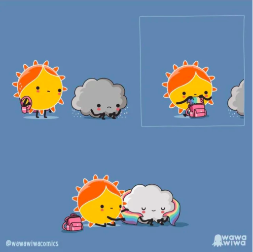

Due to the constant discrimination, oppression and prejudice that the LGBTQ+ community experiences, many individuals are at heightened risk for self-hamr, suicidal feelings and thoughts, and struggles with mental health
However, the LGBTQ+ community is diverse and continues to demonstrate strength through solidarity and bringing awareness to these issues. It's important that we all show our support for marginalized communities undergoing discrimination.
Straight or cisgender allies should continue to show public support for the LGBTQ+ community, encourage tolerance and acceptance, and actively voice against prejudice in their own communities and circles. LGBTQ+ individuals should validate and emphasize the importance of their identities, and reach out to offer support to other loved ones.
LGBTQ+ youth are greatly and disproportionately at risk for self-harm: over 80% have been assaulted or threatened, compounding their victimization.
Be an active listener. Empathize with, and check on LGBTQ+ loved ones. Always be sure to practice active listening technique and be on the lookout for warning signs (be direct). Have a conversation and get to understand their story.
Strong support, tight bonds, safe schools and homes. Work to bring awareness to and ensure that LGBTQ+ youth have safe spaces and loved ones in their lives to protect them from suicidality and depression.
Affirm gender identity. A recent study showed that transgender youth were as psychologically healthy as their other peers when their identity was validated and affirmed by their family. Support makes a difference through both community and family for the safety of LGBTQ+ children.